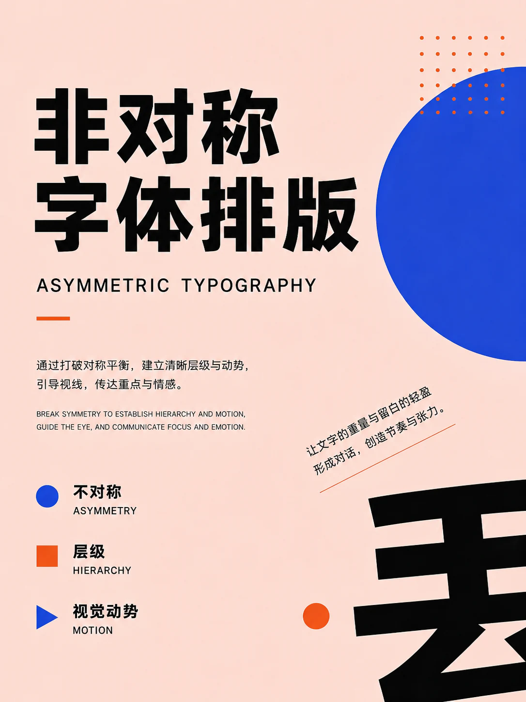

对称与非对称之差
SYMMETRY VS. ASYMMETRY
对称靠左右镜像相等稳住画面；非对称靠不等的视觉重量跨过空白互相拉住。
把同一组标题、副标、展期和说明全部推到页面中线，就是 178 居中排版：端庄、安定，但也容易让视线进画框后原地停住，左右两侧只剩两道细碎对称边角。
一旦打破中轴——大标题压住左翼、说明挂靠偏轴（类似 176 左对齐右参差 的整齐起点）、零碎空隙合并成一整片活跃留白，再由对角几何块与巨字拉回重心——主次层级与阅读动势立刻浮出纸面。
重量与留白的对话
WEIGHT & WHITE SPACE
字排
原海报的斜置导语直指核心：「让文字的重量与留白的轻盈形成对话，创造节奏与张力。」
很多新手一听「非对称」，就把标题和正文往左边一推了事，结果画面像坐歪的跷跷板一样往左栽倒。非对称同样讲究平衡——只是它不用「左 100 克配右 100 克同款字块」，而是用不同形态的视觉重量跨过空白互相牵制：
- 墨量与字重：粗黑大字比细体灰字重得多，哪怕只占一角也能压住半壁。
- 饱和色块：原海报右上角的电光钴蓝巨圆，不需要写一个字，单凭纯度与破框面积就能拉住左上两行大标。
- 超尺度破框字：把一个汉字放大到几乎成为建筑图形，让它斜着切出右下边角，直接锁定对角收束点。
- 整块留白：留白不是「没填满」，它是重量之间能互相看见的空气；留白太窄，再重的字也只是挤在一起。
隐性挂轴与斜势动线
HIDDEN AXIS & MOTION
非对称最容易被误会成「随手乱摆」。拉开 X 射线灯箱就会看见：高明的非对称底下，藏着比对称更严密的隐性对齐轴。
主标题、正文、注脚虽然离中线很远，却常常严丝合缝挂在同一条偏心纵轴（或两三条网格列线）上。这样读者的视线在跳跃中依然有稳定锚点——这与 177 右对齐左参差 或 188 基线对齐 对精准边线的执着一脉相承。
至于动态感，既可以像 181 原海报那样用一根 -22° 斜置导语（或轻微借用 191 路径文字 的方向引导）串起对角，也可以全篇横平竖直，纯靠错落列轴和体量级差形成安静的瑞士动势。
从包豪斯到瑞士网格
WHERE IT CAME FROM
在古腾堡之后四百多年里，欧洲印刷几乎默认以中轴对称为金科玉律。非对称字体排版成为系统理论，发生在 20 世纪二十年代的德国与瑞士。
何时该用，何时别用
WHEN TO USE & WHEN NOT TO
动手挑一张好版面
QUICK QUIZ
原海报与关键词
ORIGINAL POSTER & KEYWORDS

通过打破对称平衡，建立清晰层级与动势，引导视线，传达重点与情感。
BREAK SYMMETRY TO ESTABLISH HIERARCHY AND MOTION, GUIDE THE EYE, AND COMMUNICATE FOCUS AND EMOTION.
「让文字的重量与留白的轻盈形成对话，创造节奏与张力。」